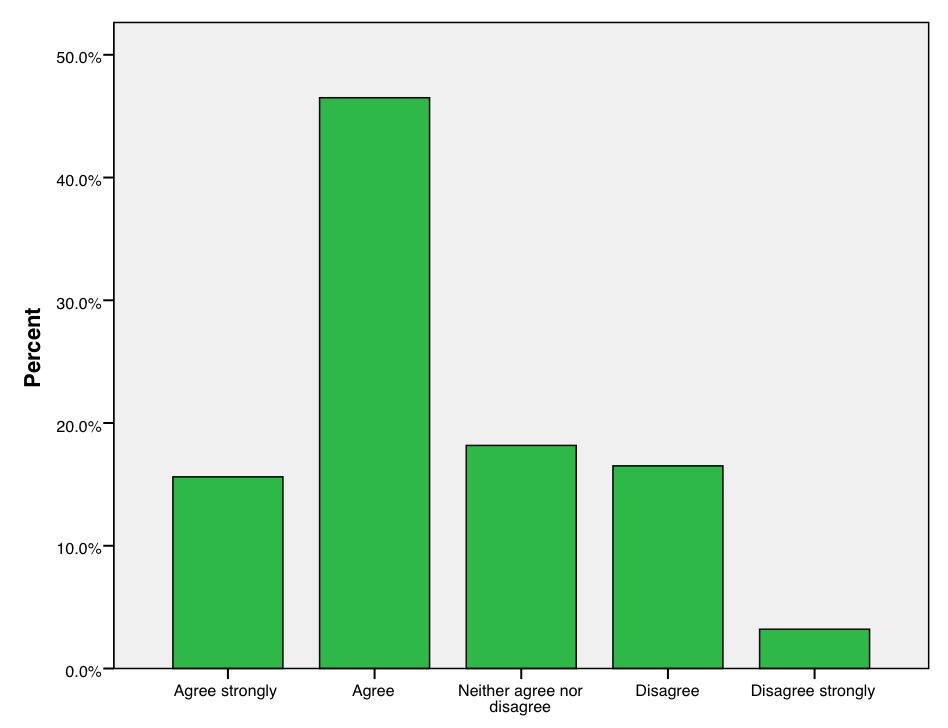

Chapter 2 Descriptive statistics
2.1 Introduction
This chapter introduces some common descriptive statistical methods. It is organised around two dichotomies:
Methods that are used only for variables with small numbers of values, vs. methods that are used also or only for variables with many values (see the end of Section 1.2.2 for more on this distinction). The former include, in particular, descriptive methods for categorical variables, and the latter the methods for continuous variables.
Univariate descriptive methods which consider only one variable at a time, vs. bivariate methods which aim to describe the association between two variables.
Section 2.3 describes univariate methods for categorical variables and Section 2.4 bivariate methods for cases where both variables are categorical. Sections 2.5 and 2.6 cover univariate methods which are mostly used for continuous variables. Section 2.7 lists some bivariate methods where at least one variable is continuous; these methods are discussed in detail elsewhere in the coursepack. The chapter concludes with some general guidelines for presentation of descriptive tables and graphs in Section 2.8.
2.2 Example data sets
Two examples are used to illustrate the methods throughout this chapter:
Example: Country data
Consider data for 155 countries on three variables:
The region where the country is located, coded as 1=Africa, 2=Asia, 3=Europe, 4=Latin America, 5=Northern America, 6=Oceania.
A measure of the level of democracy in the country, measured on an 11-point scale from 0 (lowest level of democracy) to 10 (highest).
Gross Domestic Product (GDP) per capita, in thousands of U.S. dollars.
Further information on the variables is given in the appendix to this chapter (Section 2.9), together with the whole data set, shown in Table 2.14.
Region is clearly a discrete (and categorical), nominal-level variable, and GDP a continuous, interval-level variable. The democracy index is discrete; it is most realistic to consider its measurement level to be ordinal, and it is regarded as such in this chapter. However, it is the kind of variable which might in many analyses be treated instead as an effectively continuous, interval-level variable.
Example: Survey data on attitudes towards income redistribution
The data for the second example come from Round 5 of the European Social Survey (ESS), which was carried out in 2010.2 The survey was fielded in 28 countries, but here we use only data from 2344 respondents in the UK. Two variables are considered:
Sex of the respondent, coded as 1=Male, 2=Female.
Answer to the following survey question:
“The government should take measures to reduce differences in income levels”,
with five response options coded as “Agree strongly”=1, “Agree”=2, “Neither agree nor disagree”=3, “Disagree”=4, and “Disagree strongly”=5. This is a measure of the respondent’s attitude towards income redistribution.
Both of these are discrete, categorical variables. Sex is binary and attitude is ordinal.
Attitudes towards income redistribution are an example of the broader topic of public opinion on welfare state policies. This is a large topic of classic and current interest in the social sciences, and questions on it have been included in many public opinion surveys.3 Of key interest is to explore the how people’s attitudes are associated with their individual characteristics (including such factors as age, sex, education and income) and the contexts in which they live (for example the type of welfare regime adopted in their country). In section 2.4 below we use descriptive statistics to examine such associations between sex and attitude in this sample.
2.3 Single categorical variable
2.3.1 Describing the sample distribution
The term distribution is very important in statistics. In this section we consider the distribution of a single variable in the observed data, i.e. its sample distribution:
- The sample distribution of a variable consists of a list of the values of the variable which occur in a sample, together with the number of times each value occurs.
Later we will discuss other kinds of distributions, such as population, probability and sampling distributions, but they will all be variants of the same concept.
The task of descriptive statistics for a single variable is to summarize the sample distribution or some features of it. This can be done in the form of tables, graphs or single numbers.
2.3.2 Tabular methods: Tables of frequencies
When a variable has only a limited number of distinct values, its sample distribution can be summarized directly from the definition given above. In other words, we simply count and display the number of times each of the values appears in the data. One way to do the display is as a table, like the ones for region and the democracy index in the country data, and attitude in the survey example, which are shown in Tables 2.1, 2.2 and 2.3 respectively.
| Region | Frequency | Proportion | % |
|---|---|---|---|
| Africa | 48 | 0.310 | 31.0 |
| Asia | 44 | 0.284 | 28.4 |
| Europe | 34 | 0.219 | 21.9 |
| Latin America | 23 | 0.148 | 14.8 |
| Northern America | 2 | 0.013 | 1.3 |
| Oceania | 4 | 0.026 | 2.6 |
| Total | 155 | 1.000 | 100.0 |
| Democracy | Cumulative | |||
| score | Frequency | Proportion | % | % |
| 0 | 35 | 0.226 | 22.6 | 22.6 |
| 1 | 12 | 0.077 | 7.7 | 30.3 |
| 2 | 4 | 0.026 | 2.6 | 32.9 |
| 3 | 6 | 0.039 | 3.9 | 36.8 |
| 4 | 5 | 0.032 | 3.2 | 40.0 |
| 5 | 5 | 0.032 | 3.2 | 43.2 |
| 6 | 12 | 0.077 | 7.7 | 50.9 |
| 7 | 13 | 0.084 | 8.4 | 59.3 |
| 8 | 16 | 0.103 | 10.3 | 69.6 |
| 9 | 15 | 0.097 | 9.7 | 79.3 |
| 10 | 32 | 0.206 | 20.6 | 99.9 |
| Total | 155 | 0.999 | 99.9 |
| Response | Frequency | Proportion | % | Cumulative % |
| Agree strongly (1) | 366 | 0.156 | 15.6 | 15.6 |
| Agree (2) | 1090 | 0.465 | 46.5 | 62.1 |
| Neither agree nor disagree (3) | 426 | 0.182 | 18.2 | 80.3 |
| Disagree (4) | 387 | 0.165 | 16.5 | 96.8 |
| Disagree strongly (5) | 75 | 0.032 | 3.2 | 100.0 |
| Total | 2344 | 1.00 | 100.0 |
Each row of such a table corresponds to one possible value of a variable, and the second column shows the number of units with that value in the data. Thus there are 48 countries from Africa and 44 from Asia in the contry data set and 32 countries with the highest democracy score 10, and so on. Similarly, 366 respondents in the survey sample strongly agreed with the attitude question, and 75 strongly disagreed with it. These counts are also called frequencies, a distribution like this is a frequency distribution, and the table is also known as a frequency table. The sum of the frequencies, given on the line labelled “Total” in the tables, is the sample size \(n\), here 155 for the country data and 2344 for the survey data.
It is sometimes more convenient to consider relative values of the frequencies instead of the frequencies themselves. The relative frequency or proportion of a category of a variable is its frequency divided by the sample size. For example, the proportion of countries from Africa in the country data is \(48/155=0.310\) (rounded to three decimal places). A close relative of the proportion is the percentage, which is simply proportion multiplied by a hundred; for example, 31% of the countries in the sample are from Africa. The sum of the proportions is one, and the sum of the percentages is one hundred (because of rounding error, the sum in a reported table may be very slightly different, as it is in Table 2.2).
2.3.3 Graphical methods: Bar charts
Graphical methods of describing data (statistical graphics) make use of our ability to process and interpret even very large amounts of visual information. The basic graph for summarising the sample distribution of a discrete variable is a bar chart. It is the graphical equivalent of a one-way table of frequencies.
Figures 2.1, 2.2 and 2.3 show the bar charts for region, democracy index and attitude, corresponding to the frequencies in Tables 2.1, 2.2 and 2.3. Each bar corresponds to one category of the variable, and the height of the bar is proportional to the frequency of observations in that category. This visual cue allows us to make quick comparisons between the frequencies of different categories by comparing the heights of the bars.
 {height=“9.5cm”}
{height=“9.5cm”}
 {height=“9.5cm”}
{height=“9.5cm”}
{height=“8cm”}
Some guidelines for drawing bar charts are:
The heights of the bars may represent frequencies, proportions or percentages. This only changes the units on the vertical axis but not the relative heights of the bars. The shape of the graph will be the same in each case. In Figure 2.1, the units are frequencies, while in Figures 2.2 and 2.3 they are percentages.
The bars do not touch each other, to highlight the discrete nature of the variable.
The bars must start at zero. It they do not, visual comparisons between their heights are distorted and the graph becomes useless.
If the variable is ordinal, the bars must be in the natural order of the categories, as in Figures 2.2 and 2.3. If the variable is nominal, the order is arbitrary. Often it makes sense to order the categories from largest (i.e. the one with the largest frequency) to the smallest, possibly leaving any “Others” category last. In Figure 2.1, the frequency ordering would swap Northern America and Oceania, but it seems more natural to keep Northern and Latin America next to each other.
A bar chart is a relatively unexciting statistical graphic in that it does not convey very much visual information. For nominal variables, in particular, the corresponding table is often just as easy to understand and takes less space. For ordinal variables, the bar chart has the additional advantage that its shape shows how the frequencies vary across the ordering of the categories. For example, Figure 2.2 quite effectively conveys the information that the most common values of the democracy index are the extreme scores 0 and 10.
Sometimes you may see graphs which look like bar charts of this kind, but which actually show the values of a single variable for some units rather than frequncies or percentages. For example, a report on the economies of East Asia might show a chart of GDP per capita for Japan, China, South Korea and North Korea, with one bar for each country, and their heights proportional to 28.2, 5.0, 17.8 and 1.3 respectively (c.f. the data in Table 2.14). The basic idea of such graphs is the same as that of standard bar charts. However, they are not particularly useful as descriptive statistics, since they simply display values in the original data without any summarization or simplification.
2.3.4 Simple descriptive statistics
Instead of the whole sample distribution, we may want to summarise only some individual aspects of it, such as its central tendency or variation. Descriptive statistics that are used for this purpose are broadly similar for both discrete and continuous variables, so they will be discussed together for both in Section 2.6.
2.4 Two categorical variables
2.4.1 Two-way contingency tables
The next task we consider is how to describe the sample distributions of two categorical variables together, and in so doing also summarise the association between these variables. The key tool is a table which shows the crosstabulation of the frequencies of the variables. This is also known as a contingency table. Table 2.4 shows such a table for the respondents’ sex and attitude in our survey example. We use it to introduce the basic structure and terminology of contingency tables:
Sex |
Agree strongly | Agree |
Neither agree nor disagree | Disagree |
Disagree strongly | Total |
| Male | 160 | 439 | 187 | 200 | 41 | 1027 |
| Female | 206 | 651 | 239 | 187 | 34 | 1317 |
| Total | 366 | 1090 | 426 | 387 | 75 | 2344 |
Because a table like 2.4 summarizes the values of two variables, it is known as a two-way contingency table. Similarly, the tables of single variables introduced in Section 2.3.2 are one-way tables. It is also possible to construct tables involving more than two variables, i.e. three-way tables, four-way tables, and so on. These are discussed in Chapter 9.
The variables in a contingency table may ordinal or nominal (including dichotomous). Often an ordinal variable is derived by grouping an originally continuous, interval-level variable, a practice which is discussed further in Section 2.5.
The horizontal divisions of a table (e.g. the lines corresponding to the two sexes in Table 2.4) are its rows, and the vertical divisions (e.g. the survey responses in Table 2.4) are its columns.
The size of a contingency table is stated in terms of the numbers of its rows and columns. For example, Table 2.4 is a \(2\times 5\) (pronounced “two-by-five”) table, because it has two rows and five columns. This notation may also be used symbolically, so that we may refer generically to \(R\times C\) tables which have some (unspecified) number of \(R\) rows and \(C\) columns. The smallest two-way table is thus a \(2\times 2\) table, where both variables are dichotomous.
The intersection of a row and a column is a cell of the table. The basic two-way contingency table shows in each cell the number (frequency) of units in the data set with the corresponding values of the row variable and the column variable. For example, Table 2.4 shows that there were 160 male respondents who strongly agreed with the statement, and 239 female respondents who neither agreed nor disagreed with it. These frequencies are also known as cell counts.
The row and column labelled “Total” in Table 2.4 are known as the margins of the table. They show the frequencies of the values of the row and the column variable separately, summing the frequencies over the categories of the other variable. For example, the table shows that there were overall 1027 (\(=160+439+187+200+41\)) male respondents, and that overall 75 (\(=41+34\)) respondents strongly disagreed with the statement. In other words, the margins are one-way tables of the frequencies of each of the two variables, so for example the frequencies on the margin for attitude in Table 2.4 are the same as the ones in the one-way table for this variable shown in Table 2.3. The distributions described by the margins are known as the marginal distributions of the row and column variables. In contrast, the frequencies in the internal cells of the table, which show how many units have each possible combination of the row and column variables, describe the joint distribution of the two variables.
The number in the bottom right-hand corner of the table is the sum of all of the frequencies, i.e. the total sample size \(n\).
In addition to frequencies, it is often convenient to display proportions or percentages. Dividing the frequencies by the sample size gives overall proportions and (multiplying by a hundred) percentages. This is illustrated in Table 2.5, which shows the overall proportions, obtained by dividing the frequencies in Table 2.4 by \(n=2344\). For example, out of all these respondents, the proportion of 0.102 (\(=239/2344\)) were women who neither agreed nor disagreed with the statement. The proportions are also shown for the marginal distributions: for example, 15.6% (i.e. the proportion \(0.156=366/2344\)) of the respondents strongly agreed with the statement. The sum of the proportions over all the cells is 1, as shown in the bottom right corner of the table.
Sex |
Agree strongly | Agree |
Neither agree nor disagree | Disagree |
Disagree strongly | Total |
| Male | 0.068 | 0.187 | 0.080 | 0.085 | 0.017 | 0.438 |
| Female | 0.088 | 0.278 | 0.102 | 0.080 | 0.015 | 0.562 |
| Total | 0.156 | 0.465 | 0.182 | 0.165 | 0.032 | 1.000 |
2.4.2 Conditional proportions
A two-way contingency table is symmetric in that it does not distinguish between explanatory and response variables. In many applications, however, this distinction is useful for interpretation. In our example, for instance, it is natural to treat sex as the explanatory variable and attitude towards income redistribution as the response response, and so to focus the interpretation on how attitude may depend on sex.
The overall proportions are in such cases not the most relevant quantities for interpretation of a table. Instead, we typically calculate proportions within each category of the row variable or the column variable, i.e. the conditional proportions of one variable given the other. The numbers in brackets in Table 2.6 show these proportions calculated for each row of Table 2.4 (Table 2.6 also includes the actual frequencies; it is advisable to include them even when conditional proportions are of most interest, to show the numbers on which the proportions are based). In other words, these are the conditional proportions of attitude towards income redistribution given sex, i.e. separately for men and women. For example, the number 0.156 in the top left-hand corner of Table 2.6 is obtained by dividing the number of male respondents who agreed strongly with the statement (160) by the total number of male respondents (1027). Thus 15.6% of the men strongly agreed, and for example 2.6% of women strongly disagreed with the statement. The (1.0) in the last column of the table indicate that the proportions sum to 1 along each row, to remind us that the conditional proportions have been calculated within the rows. The bracketed proportions in the ‘Total’ row are the proportions of the marginal distribution of the attitude variable, so they are the same as the proportions in the ‘Total’ row of Table 2.5.
Sex |
Agree strongly | Agree |
Neither agree nor disagree | Disagree |
Disagree strongly | Total |
| Male | 160 | 439 | 187 | 200 | 41 | 1027 |
| (0.156) | (0.428) | (0.182) | (0.195) | (0.040) | (1.0) | |
| Female | 206 | 651 | 239 | 187 | 34 | 1317 |
| (0.156) | (0.494) | (0.182) | (0.142) | (0.026) | (1.0) | |
| Total | 366 | 1090 | 426 | 387 | 75 | 2344 |
| (0.156) | (0.465) | (0.182) | (0.165) | (0.032) | (1.0) |
We could also have calculated conditional proportions within the columns, i.e. for sex given attitude. For example, the proportion \(0.563=206/366\) of all respondents who strongly agreed with the statement are women. These, however, seem less interesting, because it seems more natural to examine how attitude varies by sex rather than how sex varies by attitude. In general, for any two-way table we can calculate conditional proportions for both the rows and the columns, but typically only one of them is used for interpretation.
2.4.3 Conditional distributions and associations
Suppose that we regard one variable in a two-way table as the explanatory variable (let us denote it by \(X\)) and the other variable as the response variable (\(Y\)). In our survey example, sex is thus \(X\) and attitude is \(Y\). Here the dichotomous \(X\) divides the full sample into two groups, identified by the observed value of \(X\) — men and women. We may then think of these two groups as two separate samples, and consider statistical quantities separately for each of them. In particular, in Table 2.6 we calculated conditional proportions for \(Y\) given \(X\), i.e. for attitude given sex. These proportions describe two distinct sample distributions of \(Y\), one for men and one for women. They are examples of conditional distributions:
- The conditional distribution of a variable \(Y\) given another variable \(X\) is the distribution of \(Y\) among those units which have a particular value of \(X\).
This concept is not limited to two-way tables but extends also to other kinds of variables and distributions that are discussed later in this coursepack. Both the response variable \(Y\) and the explanatory variable \(X\) may be continuous as well as discrete, and can have any number of values. In all such cases there is a separate conditional distribution for \(Y\) for each possible value of \(X\). A particular one of these distributions is sometimes referred to more explicitly as the conditional distribution of \(Y\) given \(X=x\), where the “\(X=x\)” indicates that \(X\) is considered at a particular value \(x\) (as in “the distribution of \(Y\) given \(X=2\)”, say).
Conditional distributions of one variable given another allow us to define and describe associations between the variables. The informal definition in Section 1.2.4 stated that there is an association between two variables if knowing the value of one of them will help to predict the value of the other. We can now give a more precise definition:
- There is an association between variables \(X\) and \(Y\) if the conditional distribution of \(Y\) given \(X\) is different for different values of \(X\).
This definition coincides with the more informal one. If the conditional distribution of \(Y\) varies with \(X\) and if we know \(X\), it is best to predict \(Y\) from its conditional distribution given the known value of \(X\). This will indeed work better than predicting \(Y\) without using information on \(X\), i.e. from the marginal distribution of \(Y\). Prediction based on the conditional distribution would still be subject to error, because in most cases \(X\) does not predict \(Y\) perfectly. In other words, the definition of an association considered here is statistical (or probabilistic) rather than deterministic. In our example a deterministic association would mean that there is one response given by all the men and one response (possibly different from the men’s) given by all the women. This is of course not the case here nor in most other applications in the social sciences. It is thus crucially important that we have the tools also to analyse statistical associations.
In our example, sex and attitude are associated if men and women differ in their attitudes toward income redistribution. Previous studies suggest that such an association exists, and that it takes the form that women tend to have higher levels of support than men for redistribution.4 As possible explanations for this pattern, both structural reasons (women tend to have lower incomes than men and to rely more on welfare state support) and cultural or psychological ones (women are more likely than men to adopt social values of equality and caring) have been suggested.
2.4.4 Describing an association using conditional proportions
Two variables presented in a contingency table are associated in the sample if the conditional distributions of one of them vary across the values of the other. This is the case in our data set: for example, 4.0% of men but 2.6% of women strongly disagree with the statement. There is thus some association between sex and attitude in this sample. This much is easy to conclude. What requires a little more work is a more detailed description of the pattern and strength of the association, i.e. how and where the conditional distributions differ from each other.
The most general way of summarising associations in a contingency table is by comparing the conditional proportions of the same level of the response given different levels of the explanatory variable. There is no simple formula for how this should be done, so you should use your common sense to present comparisons which give a good summary of the patterns across the table. Unless both variables in the table are dichotomous, several different comparisons may be needed, and may not all display similar patterns. For example, in Table 2.6 the same proportion (0.156, or 15.6%) of both men and women strongly agree with the statement, whereas the proportion who respond “Agree” is higher for women (49.4%) than for men (42.8%).
When the response variable is ordinal, it is often more illuminating to focus on comparisons of cumulative proportions which add up conditional proportions over two or more adjacent categories. For instance, the combined proportion of respondents who either strongly agree or agree with the statement is a useful summary of the general level of agreement among the respondents. In our example this is 58.4% (\(=15.5\%+42.8\%\)) for men but 65.0% for women.
A comparison between two proportions may be further distilled into a single number by reporting the difference or ratio between them. For example, for the proportions of agreeing or strongly agreeing above, the difference is \(0.650-0.584=0.066\), so the proportion is 0.066 (i.e. 6.6 percentage points) higher for women than for men. The ratio of these proportions is \(0.650/0.584=1.11\), so the proportion for women is 1.11 times the proportion for men (i.e. 11% higher). Both of these indicate that in this sample women were more likely to agree or strongly agree with the statement than were men. In a particular application we might report a difference or a ratio like this, depending on which of them was considered more relevant or easily understandable. Other summaries are also possible; for example, on MY452 we will discuss a measure called the odds ratio, which turns out to be convenient for more general methods of analysing associations involving categorical variables.
The broad conclusion in the example is that there is an association between sex and attitude in these data from the European Social Survey, and that it is of the kind suggested by existing literature. A larger proportion of women than of men indicate agreement with the statement that the government should take measures to reduce income differences, and conversely larger proportion of men disagree with it (e.g. 23.5% of men but only 16.8% of women disagree or strongly disagree). Thus in this sample women do indeed demonstrate somewhat higher levels of support for income redistribution. Whether these differences also warrant a generalisation of the conclusions to people outside the sample is a question which we will take up in Chapters 3 and 4.
2.4.5 A measure of association for ordinal variables
In the previous example the explanatory variable (sex) had 2 categories and the response variable (attitude) had 5. A full examination of the individual conditional distributions of attitude given sex then involved comparisons of five pairs of proportions, one for each level of the attitude variable. This number gets larger still if the explanatory variable also has several levels, as in the following example:
Example: Importance of short-term gains for investors
Information on the behaviour and expectations of individual investors was collected by sending a questionnaire to a sample of customers of a U.S. brokerage house.5 One of the questions asked the respondents to state how much importance they placed on quick profits (short-term gains) as an objective when they invested money. The responses were recorded in four categories as “Irrelevant”, “Slightly important”, “Important” or “Very important”. Table 2.7 shows the crosstabulation of this variable with the age of the respondent in four age groups.
Age group |
Irrelevant |
Slightly important | Important |
Very important | Total |
| Under 45 | 37 | 45 | 38 | 26 | 146 |
| (0.253) | (0.308) | (0.260) | (0.178) | (1.00) | |
| 45–54 | 111 | 77 | 57 | 37 | 282 |
| (0.394) | (0.273) | (0.202) | (0.131) | (1.00) | |
| 55–64 | 153 | 49 | 31 | 20 | 253 |
| (0.605) | (0.194) | (0.123) | (0.079) | (1.00) | |
| 65 and over | 193 | 64 | 19 | 15 | 291 |
| (0.663) | (0.220) | (0.065) | (0.052) | (1.00) | |
| Total | 494 | 235 | 145 | 98 | 972 |
Here there are four conditional distributions, one for each age group, and each of them is described by four proportions of different levels of attitude. There are then many possible comparisons of the kind discussed above. For example, we might want to compare the proportions of respondents who consider short-term gains irrelevant between the oldest and the youngest age group, the proportions for whom such gains are very important between these two groups, or, in general, the proportions in any category of the response variable between any two age groups.
Although pairwise comparisons like this are important and informative, they can clearly become cumbersome when the number of possible comparisons is large. A potentially attractive alternative is then to try to summarise the strength of the association between the variables in a single number, a measure of association of some kind. There are many such measures for two-way contingency tables, labelled with a range of Greek and Roman letters (e.g. \(\phi\), \(\lambda\), \(\gamma\), \(\rho\), \(\tau\), V, Q, U and d). The most useful of them are designed for tables where both of the variables are measured at the ordinal level, as is the case in Table 2.7. The ordering of the categories can then be exploited to capture the strength of the association in a single measure. This is not possible when at least one of the variables is measured at the nominal level, as any attempt to reduce the patterns of the conditional probabilities into one number will then inevitably obscure much of the information in the table. It is better to avoid measures of association defined for nominal variables, and to describe their associations only through comparisons of conditional probabilities as described in the previous section.
Here we will discuss only one measure of association for two-way tables of ordinal variables. It is known as \(\gamma\) (“gamma”). It characterises one possible general pattern of association between two ordinal variables, namely the extent to which high values of one variable tend to be associated with high or low values of the other variable. Here speaking of “low” and “high” values, or of “increasing” or “decreasing” them, is meaningful when the variables are ordinal. For example, in Table 2.7 the categories corresponding to the bottom rows and right-most columns are in an obvious sense “high” values of age and importance respectively.
Consider the conditional proportions of importance given age group shown in Table 2.7. It is clear that, for example, the proportion of respondents for whom short-term gains are very important is highest in the youngest, and lowest in the oldest age group. Similarly, the proportion of respondents for whom such gains are irrelevant increases consistently from the youngest to the oldest group. In other words, respondents with high values of the explanatory variable (age group) tend to have low values the response variable (importance of short-term gains). Such an association is said to be negative. A positive association would be seen in a table where high values of one variable were associated with high values of the other.
Measures of association for summarising such patterns are typically based on the numbers of concordant and discordant pairs of observations. Suppose we compare two units classified according to the two variables in the table. These units form a concordant pair if one of them has a higher value of both variables than the other. For example, consider two respondents in Table 2.7, one with values (Under 45; Irrelevant) and the other with (45–54; Important). This is a concordant pair, because the second respondent has both a higher value of age group (45–54 vs. Under 45) and a higher value of the importance variable (Important vs. Irrelevant) than the first respondent. In contrast, in a discordant pair one unit has a higher value of one variable but a lower value of the other variable than the other unit. For example, a pair of respondents with values (45–54; Very important) and (55–64; Irrelevant) is discordant, because the latter has a higher value of age group but a lower value of the importance variable than the former. Pairs of units with the same value of one or both of the variables are known as tied pairs. They are not used in the calculations discussed below.
The \(\gamma\) measure of association is defined as \begin{equation}\gamma=\frac{C-D}{C+D} \label{eq:gamma}\end{equation}where \(C\) is the total number of concordant pairs in the table, and \(D\) is the number of discordant pairs. For Table 2.7, the value of this is \(\gamma=-0.377\).
Calculation of \(C\) and \(D\) is straightforward but tedious and uninteresting, and can be left to a computer. Remembering the exact form of (\ref{eq:gamma}) is also not crucial. More important than the formula of \(\gamma\) (or any other measure of association) is its interpretation. This can be considered on several levels of specificity, which are discussed separately below. The discussion is relatively detailed, as these considerations are relevant and useful not only for \(\gamma\), but also for all other measures of association in statistics.
The sign of the statistic: It can be seen from (\ref{eq:gamma}) that \(\gamma\) is positive (greater than zero) when there are more concordant pairs than discordant ones (i.e. \(C>D\)), and negative when there are more discordant than concordant pairs (\(C<D\)). This also implies that \(\gamma\) will be positive when the association is positive in the sense discussed above, and negative when the association is negative. A value of \(\gamma=0\) indicates a complete lack of association of this kind. In Table 2.7 we have \(\gamma=-0.377\), indicating a negative association. This agrees with the conclusion obtained informally above.
The extreme values of the statistic: Clearly \(\gamma=1\) if there are no discordant pairs (\(D=0\)), and \(\gamma=-1\) if there are no concordant pairs (\(C=0\)). The values \(\gamma=-1\) and \(\gamma=1\) are the smallest and largest possible values of \(\gamma\), and indicate the strongest possible levels of negative and positive association respectively. More generally, the closer \(\gamma\) is to \(-1\) or 1, the stronger is the (negative or positive) association.
The formal interpretation of the statistic: This refers to any way of interpreting the value more understandably than just vaguely as a measure of “strength of association”. Most often, such an intepretation is expressed as a proportion of some kind. For \(\gamma\), this is done using a principle known as Proportional reduction of error (PRE). Because the PRE idea is also used to interpret many other measures of association in statistics, we will first describe it in general terms which are not limited to \(\gamma\).
Suppose we consider an explanatory variable \(X\) and a response variable \(Y\), and want to make predictions of the values of \(Y\) in a data set. This is done twice, first in a way which makes no use of \(X\), and then in a way which predicts the value of \(Y\) for each unit using information on the corresponding value of \(X\) and on the strength and direction of the association between \(X\) and \(Y\). Recalling the connection between association and prediction, it is clear that the second approach should result in better predictions if the two variables are associated. The comparison also reflects the strength of the association: the stronger it is, the bigger is the improvement in prediction gained by utilising information on \(X\).
A PRE measure describes the size of this improvement. Suppose that the magnitude or number of errors made in predicting the values of \(Y\) in a data set using the first scheme, i.e. ignoring information on \(X\), is somehow measured by a single number \(E_{1}\), and that \(E_{2}\) is the same measure of errors for the second prediction scheme which makes use of \(X\). The difference \(E_{1}-E_{2}\) is thus the improvement in prediction achieved by the second scheme over the first. A PRE measure of association is the ratio \begin{equation}\text{PRE}= \frac{E_{1}-E_{2}}{E_{1}}, \label{eq:PRE}\end{equation}i.e. the improvement in predictions as a proportion of the number of errors \(E_{1}\) under the first scheme. This formulation is convenient for interpretation, because a proportion is easily understandable even if \(E_{1}\) and \(E_{2}\) themselves are expressed in some unfamiliar units. The smallest possible value of (\ref{eq:PRE}) is clearly 0, obtained when \(E_{2}=E_{1}\), i.e. when using information on \(X\) gives no improvement in predictions. The largest possible value of PRE is 1, obtained when \(E_{2}=0\), i.e. when \(Y\) can be predicted perfectly from \(X\). The values 0 and 1 indicate no association and perfect association respectively.
The \(\gamma\) statistic is a PRE measure, although with a somewhat convoluted explanation. Suppose that we consider a pair of observations which is known to be either concordant or discordant (the PRE interpretation of \(\gamma\) ignores tied observations). One of the two observations thus has a higher value of \(X\) than the other. For example, suppose that we consider two respondents in Table 2.7 from different age groups. We are then asked to predict the order of the values of \(Y\), i.e. which of the two units has the higher value of \(Y\). In the example of Table 2.7, this means predicting whether the older respondent places a higher or lower level of importance on short-term gains than the younger respondent. Two sets of predictions are again compared. The first approach makes the prediction at random and with equal probabilities, essentially tossing a coin to guess whether the observation with the higher value of \(X\) has the higher or lower value of \(Y\). The second prediction makes use of information on the direction of the association between \(X\) and \(Y\). If the association is known to be negative (i.e. there are more discordant than concordant pairs), every pair is predicted to be discordant; if it is positive, every pair is predicted to be concordant. For example, in Table 2.7 the association is negative, so we would always predict that the older of two respondents places a lower value of importance on short-term gains.
If these predictions are repeated for every non-tied pair in the table, the expected number of incorrect predictions under the first scheme is \(E_{1}=(C+D)/2\). Under the second scheme it is \(E_{2}=D\) if the association is positive and \(E_{2}=C\) if it is negative. Substituting these into the general formula (\ref{eq:PRE}) shows that the \(\gamma\) statistic (\ref{eq:gamma}) is of the PRE form when \(\gamma\) is positive; when it is negative, the absolute value of \(\gamma\) (i.e. its value with the minus sign omitted) is a PRE measure, and the negative sign of \(\gamma\) indicates that the association is in the negative direction. In our example \(\gamma=-0.377\), so age and attitude are negatively associated. Its absolute value \(0.377\) shows that we will make 37.7% fewer errors if we predict for every non-tied pair that the older respondent places less importance on short-term gains, compared to predictions made by tossing a coin for each pair.
The final property of interest is the substantive interpretation of the strength of association indicated by \(\gamma\) for a particular table. For example, should \(\gamma=-0.377\) for Table 2.7 be regarded as evidence of weak, moderate or strong negative association between age and attitude? Although this is usually the most (or only) interesting part of the interpretation, it is also the most difficult, and one to which a statistician’s response is likely to be a firm “it depends”. This is because the strength of associations we may expect to observe depends on the variables under consideration: a \(\gamma\) of 0.5, say, might be commonplace for some types of variables but never observed for others. Considerations of the magnitude of \(\gamma\) are most useful in comparisons of associations between the same two variables in different samples or groups. For example, in Chapter 9 we will calculate \(\gamma\) for the variables in Table 2.7 separately for men and women (see Table 9.4). These turn out to be very similar, so the strength of the association appears to be roughly similar in these two groups.
Three further observations complete our discussion of \(\gamma\):
Since “high” values of a variable were defined as ones towards the bottom and right of a table, reversing the order in which the categories are listed will also reverse the interpretation of “high” and “low” and of a “negative” or “positive” association. Such a reversal for one variable will change the sign of \(\gamma\) but not its absolute value. For example, in Table 2.7 we could have listed the age groups from the oldest to the youngest, in which case we would have obtained \(\gamma=0.377\) instead of \(\gamma=-0.377\). Reversing the ordering of both of the variables will give the same value of \(\gamma\) as when neither is reversed. The nature and interpretation of the association remain unchanged in each case.
\(\gamma\) can also be used when one or both of the variables are dichotomous, but not when either is nominal and has more than two categories. If, for example, the table includes a nominal variable with four categories, there are 24 different and equally acceptable ways of ordering the categories, each giving a different value of \(\gamma\) (or rather 12 different positive values and their negatives). An interpretation of the value obtained for any particular ordering is then entirely meaningless.
\(\gamma\) can also be treated as an estimate of the corresponding measure of association in a population from which the observed table is a sample. To emphasise this, the symbol \(\hat{\gamma}\) is sometimes used for the sample statistic we have discussed here, reserving \(\gamma\) for the population parameter. It is then also possible to define significance tests and confidence intervals for the population \(\gamma\). These are given, for example, in SPSS output for two-way tables. Here, however, we will not discuss them, but will treat \(\gamma\) purely as a descriptive measure of association. Statistical inference on associations for two-way tables will be considered only in the context of a different test, introduced in Chapter 4.
2.5 Sample distributions of a single continuous variable
2.5.1 Tabular methods
A table of frequencies and proportions or percentages is a concise and easily understandable summary of the sample distribution of a categorical variable or any variable for which only a small number of different values have been observed. On the other hand, applying the same idea to a continuous variable or a discrete variable with many different values is likely to be less useful, because all of the individual frequencies may be small. For example, in this section we illustrate the methods using the GDP variable in the country data introduced at the beginning of Section 2.2. This has 99 different values among the 155 countries, 66 of these values appear only once, and the largest frequency (for 0.8) is five. A frequency table of these values would be entirely unenlightening.
| GDP (thousands of dollars) | Frequency |
% |
| less than 2.0 | 49 | 31.6 |
| 2.0–4.9 | 32 | 20.6 |
| 5.0–9.9 | 29 | 18.7 |
| 10.0–19.9 | 21 | 13.5 |
| 20.0–29.9 | 19 | 12.3 |
| 30.0 or more | 5 | 3.2 |
| Total | 155 | 99.9 |
Instead, we can count the frequencies for some intervals of values. Table 2.8 shows an example of this for the GDP variable. The frequency on its first line shows that there are 49 countries with GDP per capita of less than $2000, the second line that there are 32 countries with the GDP per capita between $2000 and $4900 (these values included), and so on. We have thus in effect first created an ordinal categorical variable by grouping the original continuous GDP variable, and then drawn a frequency table of the grouped variable in the same way as we do for categorical variables. Some information about the distribution of the original, ungrouped variable will be lost in doing so, in that the exact values of the observations within each interval are obscured. This, however, is a minor loss compared to the benefit of obtaining a useful summary of the main features of the distribution.
The intervals must be mutually exclusive, so that no value belongs to more than one interval, and exhaustive, so that all values in the data belong to some interval. Otherwise the choice is arbitrary, in that we can choose the intervals in any way which is sensible and informative. Often this is a question of finding the right balance between too few categories (losing too much of the original information) and too many categories (making the table harder to read).
2.5.2 Graphical methods
Histograms
 {width=“13.5cm”}
{width=“13.5cm”}
A histogram is the graphical version of a frequency table for a grouped variable, like that in Table 2.8. Figure 2.4 shows a histogram for the GDP variable (the histogram consists of the bars; the lines belong to a different graph, the frequency polygon explained below). The basic idea of a histogram is very similar to that of the bar chart, except that now the bars touch each other to emphasise the fact that the original (ungrouped) variable is considered continuous. Because the grouped variable is ordinal, the bars of a histogram must be in the correct order.
A good choice of the grouping intervals of the variable and thus the number of bars in the histogram is important for the usefulness of the graph. If there are too few bars, too much information is obscured; if too many, the shape of the histogram may become confusingly irregular. Often the number of intervals used for a histogram will be larger than what would be sensible for a table like 2.8. Furthermore, intervals like those in Table 2.8 are not even allowed in a histogram, because they are of different widths (of 2, 3, 5, 10 and 10 units for the first five, and unbounded for the last one). The intervals in a histogram must be of equal widths, because otherwise the visual information in it becomes distorted (at least unless the histogram is modified in ways not discussed here). For example, the intervals in Figure 2.4 (less than 2.5, 2.5–less than 5.0, 5.0–less than 7.5 etc.) are all 2.5 units wide. The exact choice can usually be left to computer packages such as SPSS which use automatic rules for choosing sensible intervals.
Frequency polygons
Figure 2.4 also shows a frequency polygon of the GDP variable. This is obtained by drawing lines to connect the mid-points of the tops of the bars in a histogram. At each end of the histogram the lines are further connected to zero, as if the histogram had additional bars of zero height to the left and right of the smallest and largest observed categories. The result is a curve with a similar shape as the corresponding histogram, and its interpretation is similar to that of the histogram.
A histogram is usually preferable to a frequency polygon for presenting a single distribution, especially since histograms are typically much easier to produce in standard software such as SPSS. However, frequency polygons will later be useful for making comparisons between several distributions.
Stem and leaf plots
A stem and leaf plot is a close relative of the histogram, and is used for much the same purposes, mostly in small data sets. It is easiest to explain through an example, so let us consider the GDP variable again. The stem and leaf plot for it is shown in Figure 2.9. First, note that the values of the variable in the sample (from $500 to $37800, recorded as 0.5 to 37.8 thousands of dollars) have at most three significant digits. If the observations have too many digits to be convenient for a stem and leaf plot, they can be rounded first; for example, if the GDP figures had actually been recorded down to the last dollar, we would have rounded them to the nearest hundred dollars (as in Table 2.14) for the plot. The last digit (here hundreds of dollars) will determine the leaves for the plot, while other digits (here round thousands of dollars) will define the stem.
0 |
5566677778888899 |
1 |
0001112233334445566677788899999 |
2 |
1122234556799 |
3 |
02334579 |
4 |
00013567889 |
5 |
014588 |
6 |
0013334779 |
7 |
002466 |
8 |
9 |
9 |
000159 |
10 |
267 |
11 |
12448 |
12 |
38 |
13 |
139 |
14 |
|
15 |
7 |
16 |
9 |
17 |
8 |
18 |
0 |
19 |
0028 |
20 |
0 |
21 |
56 |
22 |
0 |
23 |
247 |
24 |
|
25 |
|
26 |
78 |
27 |
4667 |
28 |
26 |
29 |
0168 |
30 |
0 |
31 |
1 |
32 |
7 |
33 |
|
34 |
|
35 |
|
36 |
|
37 |
88 |
The left-hand column in 2.9 lists the stem values in the data, from smallest (0) to the largest (37). Each data value with the same stem is represented on the same line by its leaf, i.e. its last digit. Thus the smallest value, 0.5 for Sierra Leone, is shown as a leaf “5” on the “0” stem, East Timor (another 0.5) as another “5” next to it, and so on up to the largest value 37.8 for Norway, shown as an “8” leaf on the “37” stem.
The stem and leaf plot is very similar to a histogram (try turning Figure 2.9 on its side, and compare to Figure 2.4). It has the additional advantage that it also shows the actual numerical values of the observations. In some rather special cases this can reveal additional features of the data. Consider, for example, the plot shown in Figure 2.10. The variable here is the number of hours 86 respondents in a social survey (a small subset of all the respondents, drawn purely for this illustration) reported their spouse worked in the previous week. An obvious feature of the plot is the prevalence of zeroes as the leaves, especially the many observations with 40 reported hours. This suggests that most respondents probably did not carefully recall and add up the exact hours their spouses worked the previous week; instead, a round “40” is likely to be effectively a synonym for “my spouse has a regular nine-to-five job”. Such digit preference is quite common for many variables in surveys, and serves as a reminder that our measurements are not always as precise as they may appear.
1 |
55 |
2 |
0000000555 |
3 |
00002222556889 |
4 |
000000000000000000000000000000255556888 |
5 |
000000355 |
6 |
000000555 |
7 |
022 |
 {width=“15cm”}
{width=“15cm”}
Box plots
A box plot differs from the graphs discussed so far in that it does not attempt to display the whole distribution, but only certain characteristics of it. The quantities included in a box plot are some of the summary statistics defined in Section 2.6. To introduce the idea, one box plot is shown in Figure 2.5. The variable considered here is again GDP per capita. The vertical axis shows possible values of the variable, and the plot itself contains the following elements:
The line inside the central box is the median of the variable. Here it is 4.7.
The end points of the box are the first and third quartile of the variable, here 1.7 and 11.4 respectively. The length of the box is thus the interquartile range (IQR), here \(\text{IQR}=11.4-1.7=9.7\). The range of values covered by the box contains the middle 50% of the observations. Half of the countries in this sample have GDPs between $1700 and $11400.
The two lines extending from the box on either side are known as the whiskers. Their length is determined as follows:
Calculate the value of 1.5 times the IQR. This is the maximum length of each whisker. Here this is \(1.5\times 9.7=14.6\)
The lower whisker extends to the smallest value (minimum) of the variable in the sample, or to the smallest value which is at most 1.5\(\times\)IQR units below the first quartile, whichever is larger. Here the minimum is 0.5, which is less than 14.6 units below the first quartile of 1.7, so the lower whisker ends at 0.5.
The upper whisker extends to the largest value (maximum) in the sample, or to the largest value which is at most 1.5\(\times\)IQR units above the third quartile, whichever is smaller. Here the maximum is 37.8, which is further than the maximum distance of 14.6 above the third quartile of 11.4 allowed for a whisker. Thus the upper whisker could be drawn at most to \(11.4+14.6=26\). In this sample there are actually no observations of exactly 26, so the whisker ends at the next smallest observed value, which is 23.7.
If the mimimum is further than 1.5\(\times\)IQR below the first quartile, or maximum further than 1.5\(\times\)IQR above the third quartile, there are still observations which are not in the range spanned by the box and the whiskers. Such extreme observations are considered outliers in the plot. The values for each outlier are plotted separately as points. Here there are 15 different outlying values, all with large values of the variable (because in two cases two countries have the same value, these 15 points actually represent 17 countries).
A box plot thus shows some of the main features of a distribution with the following visual cues:
The central line shows a central value (the median) of the distribution.
The box shows the location of the central bulk (middle 50%) of the observations
The whiskers show the range of the regular (non-outlying) observations.
Very extreme values (outliers), if any, are shown individually.
This can be quite effective for summarizing a distribution. For example, a box plot where the median line is not roughly in the middle of the box, or where one of the whiskers is much longer than the other, indicates that the sample distribution is skewed in the direction of the longer half of the box and the longer whisker. Here the distribution of GDP per capita is clearly positively skewed, as we have already observed. However, for a single distribution all such information and more can also be obtained from a histogram. It is instead for comparisons of distributions between two or more samples that box plots are particularly convenient, because it is easy to place two or more of them side by side. This will be illustrated later in Section 7.2.1.
Other graphs for single variables
Other types of graphs that are not described here are also sometimes used for displaying distributions. One of them is a pie chart, which shows the proportions of the levels of a categorical (or grouped continuous) variable as sectors of a circle. The relative area of a sector indicates the proportion of the category. We will not discuss pie charts further here, because we do not find them particularly useful (the same information can usually be presented more clearly in a table, bar chart or histogram). That, however, is partly a matter of taste, and there is nothing inherently wrong with (clearly and properly presented) pie charts.
2.6 Numerical descriptive statistics
The tabular and graphical methods discussed above aim to display the whole sample distribution of a variable in an understandable form. The methods introduced in this section have a different purpose. Each of them is used to summarize some important single feature of the distribution in one number. In general, any such number calculated from the data is called a statistic. When it is used for data description, it is a descriptive statistic, also known as a summary statistic. This creates some terminological confusion, as the phrase “descriptive statistics” can mean either all statistical methods used for description or those statistics (i.e. numbers calculated from the data) with a descriptive purpose. The difference is usually unimportant or clear from the context.
The two salient features of a distribution for which we will define descriptive statistics are its central tendency and its variation.
2.6.1 Measures of central tendency
If you were allowed to know only one feature of the sample distribution of a variable, chances are you would ask for something like its most typical value, the middle value, or the average value — in short, you would be interested in a measure of central tendency. We will discuss three such measures below: the mode, the median and the mean (corresponding, respectively, to the phrases “most typical”, “middle” and “average” used above).
The mode
The mode is the value of the variable which occurs most often in the data, i.e. the one with the highest frequency. For example, Tables 2.1 and 2.2 show that the mode of the region variable in the country data is “Africa” and the mode of the democracy score is 0. The GDP variable has two modes, 0.8 and 1.9, which both appear five times (a distribution can have several modes; one with two modes is said to be bimodal).
The mode can be used for variables of any measurement level. For nominal variables it is the only available measure of central tendency, as the median and the mean are not appropriate for such variables.
The mode does not need to be a central value in the sense that it can even be the largest or smallest value of the variable, if this occurs most often. This is the case for the democracy index in our example.
The mode is most useful for categorical variables, where the number of possible values is small, and the most common value thus has a high frequency. With continuous variables (like GDP) and discrete variables with many different values, the mode may be unstable and misleading. For example, it is perfectly possible that all but one value appear once each in a sample, and the mode is the value which happens to occur twice.
The median
Suppose that the values of a variable in a sample are first ordered from the smallest to the largest. For example, in Table 2.14 the countries are ordered in this way according to their GDP (starting from the bottom of the table). The median is the value which falls in the middle of this ordering, so that it divides the observed values into two halves. Because this requires a meaningful ordering of the values, the median is appropriate only for ordinal and interval-level variables, but not for nominal ones.
More specifically, suppose that there are \(n\) observations, indexed from 1 for the smallest to \(n\) for the largest. The index of the middle observation is then \((n+1)/2\). If \(n\) is an odd number, the median is simply the observation in the ordered sample with this index. If \(n\) is even, \((n+1)/2\) falls between two whole numbers, and the median is the mean (of the kind defined below) of the observations with these two indices. For example, in the country data set \(n=155\) (an odd number), and \((n+1)/2=78\), so the median is the value of the 78th observation in the ordered sample; if instead there had been \(n=156\) countries, \((n+1)/2=78.5\), so the median would have been the mean of the 78th and 79th observations.
In the country data set the median of the democracy score is 6, and the median GDP is $4700 (the 78th observation in GDP order is Paraguay). In practice these are of course found using a a computer package like SPSS. For an ordinal categorical variable like the democracy score the median can also be found easily from the frequency table by considering the cumulative percentages (or proportions) of the categories. These are obtained by adding up the percentages up to and including each category, as shown in the last column of Table 2.2. The median is then the category in which the cumulative percentage reaches or passes 50%. For the democracy index this happens for the score of 6, which has a cumulative percentage of 50.9%.
The mean
The mean is the best-known and most widely used measure of central tendency. It is also known as the average. To define the mean, we need to introduce our first pieces of mathematical notation. Suppose first that the variable of interest is denoted by \(Y\). In practice the variable is of course called something else, like GDP or Age or Income, but in the formulas below it is much more convenient to refer to any such variable generically by one letter (note also that the choice of the letter itself is arbitrary; for example, you may often see \(X\) used instead of \(Y\) when the mean is defined). Individual observations of \(Y\) are denoted generically by \(Y_{i}\), where the subscript \(i\) identifies a single subject. The values of \(i\) range from \(1\) to \(n\), so all of the observations in the sample are \(Y_{1}, Y_{2}, \dots, Y_{n}\), e.g. in the country example (with \(n=155\)) \(Y_{1}, Y_{2}, \dots, Y_{155}\). The ordering of the observations is arbitrary here, so it might for example be the order in which they are listed in your SPSS data file. The mean \(\bar{Y}\) (“Y-bar”) of the observations of \(Y\) in the sample is defined as \begin{equation}\bar{Y} = \frac{\sum Y_{i}}{n}. \label{eq:Ybar}\end{equation}Here \(n\) is again the sample size. The symbol \(\Sigma\) (upper-case Greek letter “Sigma”) is a summation symbol, which indicates that we calculate the sum of all \(Y_{i}\) (often this is stated more explicitly by the notation \(\sum_{i} Y_{i}\) or \(\sum_{i=1}^{n} Y_{i}\) to make it clear that the summation is over all the values of \(i\)). In other words, (\ref{eq:Ybar}) is a concise expression for \[\bar{Y}= \frac{Y_{1}+Y_{2}+\dots+Y_{n}}{n}\] or, in English, “calculate the sum of all the observations of the variable \(Y\) in the sample, and divide this sum by the number of observations to obtain the mean of \(Y\) in the sample”. For example, for GDP per capita this calculation gives \[\bar{Y}= \frac{37.8+37.8+32.7+\dots+0.6+0.5+0.5}{155} =\frac{1335.1}{155}=8.6\] (rounded to one decimal place), i.e. mean GDP among these countries is about $8600.
Because the mean requires arithmetical calculations (summation and division) on the observations \(Y_{i}\), it is strictly speaking only appropriate for interval level variables, but not for ordinal ones, for which the numbers of the categories are ordered labels rather than real numbers. However, it is common to see this instruction ignored and means calculated for ordinal variables, especially when they have a large number of categories (see also the discussion under “Measurement Levels” in Section 1.2.2). For example, the mean democracy score in our sample (using the codes 0–10 as its values) is 5.4. This may be used as a summary of the central tendency of the variable, but it should not be overinterpreted as its meaning is not quite as clear as that of, say, mean GDP.
For interval level variables the mean is by far the most commonly used measure of central tendency. It does, however, have one arguably undesirable feature. This is illustrated by the statistics for the GDP variable, as shown in Table 2.11. Its mean ($8600) is clearly much larger than the median ($4700). This is due to the shape of the distribution of GDP, as revealed by Figure 2.4 or even more clearly by the stem and leaf plot of Figure 2.9. While most of the countries are concentrated around a fairly narrow range of GDPs, there are also a number of countries with much larger GDPs. The ranges of values in the small and large ends of the values in a distribution are (for fairly obvious visual reasons) called the tails of the distribution. A distribution with a (much) longer tail in one end than the other is said to be skewed. A distribution like that of GDP in Figure 2.4, with its long tail towards the large values, is said to be skewed to the right or positively skewed. A distribution shown in panel A of Figure 2.6 is skewed to the left (negatively skewed): while the examination marks of most students are relatively high, there are some students with very low marks. A distribution which has no clear skewness in either direction, like the distribution of typical weekly working hours in panel B of Figure 2.6 is (approximately) symmetric.
| Measures | of central | tendency | Measures | of | variation | |
|---|---|---|---|---|---|---|
| Variable | Mode | Median | Mean | Range | IQR | s.d. |
| Region | Africa | * | * | * | * | * |
| Democracy index | 0 | 6 | 5.4\(^{\dagger}\) | 10\(^{\dagger}\) | 8\(^{\dagger}\) | 3.9\(^{\dagger}\) |
| GDP per capita | $800 and $1900 | $4700 | $8600 | $37300 | $9700 | $9450 |
![Examples of a negatively skewed and an approximately symmetric sample distribution. Panel A shows the distribution of examination marks for MY451 (2003; n=419), and B shows the distribution of the number of hours a person usually works in their main job in the 3 per cent Individual Sample of Anonymized Records from the 2001 U.K. Census (n=867,016, respondents with hours 0 or not applicable omitted) Source of the data for panel B: Cathie Marsh Centre for Census and Survey Research, University of Manchester, http://www.ccsr.ac.uk/sars/.](twohists.png "fig:") {width=“14cm”}
{width=“14cm”}
The mean is almost always further in the direction of skewness than the median. That is why the mean of the positively skewed GDP variable is larger than its median. In general, a comparison between the two statistics will reveal the direction of any skewness, and give an indication of its magnitude. When the difference is large, as it is here, it is typically sensible to report both the mean and the median.
The mean is sensitive even to individual observations far in the tails of the distribution. Such observations, which are very different (much larger or smaller) from the rest of the data, are known as outliers. Even a single outlier can, if it is extreme enough, pull the mean far towards itself, even beyond the range of all the other observations, as in the following example:
Example: A sample with an outlier
Suppose that an M.Sc. student, preparing her dissertation on elements of social capital in Canada, is examining various measures of community activities in a sample of fourty municipalities in the province of Manitoba.6 As part of an initial description of these communities, she wants to summarize their populations, which are
5, 79, 143, 226, 303, 317, 384, 417, 448, 505, 524, 525, 538, 619, 621, 629, 637, 760, 801, 906, 955, 959, 964, 1047, 1111, 1152, 1457, 1491, 1722, 1907, 2079, 2405, 2723, 3950, 4012, 4032, 4183, 4427, 12602, 619544.
The outlier in this case is the city of Winnipeg, whose population of nearly 620,000 is 49 times as large as that of the next largest municipality in the sample. With it included in the sample, the mean population of the 40 municipalities is about 17000; without it, the mean for the other 39 is 1600. The two numbers give rather different pictures of the size of an “average” community in the data (similar differences would probably be observed for other variables too, so the large city would be an outlier in many respects in a study like this). The median, on the other hand, is 906 for the 39 smaller communities, and 930.5 with Winnipeg included. It is thus essentially unaffected by the outlier, basically because it is only influenced by the fact that 619,554 is bigger than the mid-point of the data, but not by how much bigger it is.
2.6.2 Measures of variation
A measure of central tendency is not a complete summary of a distribution, in that there can be distributions which have the same central tendency but which are different in some other respect. To illustrate this with a hypothetical example, suppose we are studying the students in three classrooms of the same grade at a local school. Each class has 14 students, and all students have just taken the same test, graded 1 (low) to 10 (high). The marks of the students are found to be as shown in Table 2.12.
Both the mean and the median of the marks are 6 in every class. However, the classes are otherwise clearly not similar. In particular, the variation (or dispersion) of the marks is very different. There is no variation at all in Class 1 where everyone has the same score, and quite a lot of variation in Class 3, while Class 2 seems to fall between the two. To capture this, some measure of variation will be needed. Three such measures are described here. All of them stricly speaking require the variable to be measured at an interval level, because they involve calculations of differences between its values. Using them on an ordinal variable is thus subject to similar cautions as for the mean above. These measures of variation are entirely inappropriate for nominal-level variables. There are some measures which can be used for such variables, but they are not described here.
| Class 1: | 6 6 6 6 6 6 6 6 6 6 6 6 6 6 |
| Class 2: | 4 4 5 5 5 6 6 6 6 7 7 7 8 8 |
| Class 3: | 1 2 2 3 4 4 4 8 8 9 9 10 10 10 |
Range
The range of a variable is simply the difference between its largest and smallest observed values (the maximum and minimum in statistical terminology). In the class example above,
Class 1: Range \(= 6-6 =0\)
Class 2: Range \(= 8-4 =4\)
Class 3: Range \(= 10-1 =9\)
The measure is largest for Class 3 and smallest for Class 1, so it seems to capture the differences in variation suggested by an initial look at the numbers themselves. For Class 1 the range is 0, because all of the observations are the same. In general, any sensible measure of variation should be zero when there is no variation (all observations are identical), and all of the measures described here have that property.
In the country data, the range of GDP is $37800-$500=$37300, and the range of the democracy score (if we cautiously treat it as an interval-level variable) is 10-0=10.
Interquartile range
The range is often not a particularly useful measure of variation, because it depends only on the two extremes of the data. It is thus very sensitive to outliers. If, for example, there is one large outlier, the range will be large even if all of the other observations are very similar to each other.
One way to reduce the effects of outliers is to ignore the tails of the distribution and consider the variation only among the central range of the data. This idea is expressed in the Interquartile range. First we have to define the quartiles:
The first quartile is the value such that 25% (one quarter) of the observations are smaller than (or equal to) it, and 75% (three quarters) bigger than (or equal to) it.
The third quartile is the value such that 75% of the observations are smaller than (or equal to) it, and 25% bigger than (or equal to) it.
The quartiles are thus similar in spirit to the median. Just as the median divides the observations into two equal halves (those below and those above the median), the quartiles divide them into two groups at different points. For example, the first quartile divides the observations into the smallest 25% and the remaining largest 75%. (The median can thus also be described as the second quartile, and all of these statistics are special cases of a larger class of similar statistics known as percentiles.)
The interquartile range (IQR) is the difference between the third and the first quartile. It is the range of the middle 50% of the observations, leaving out the smallest 25% and the largest 25%. This effectively eliminates the effects of any outliers, so IQR is a useful measure of variation (often used together with the median as measure of central tendency) when there are serious outliers or when the distribution is very skewed.
For the class example the interquartile ranges are
Class 1: IQR \(= 6-6 =0\)
Class 2: IQR \(= 7-5 =2\)
Class 3: IQR \(= 9.25-2.75 =6.5\)
These are again in the expected order.7 For the country data, the first and third quartiles for GDP are 1.7 and 11.4 respectively, and IQR=11.4-1.7=9.7. For the democracy score the quartiles are 1 and 9, and IQR=8.
Standard deviation
The most commonly used measure of variation is based on the deviations \[Y_{i}-\bar{Y}\] where \(Y_{i}\) again denotes an individual observation of a variable, and \(\bar{Y}\) is its mean. A deviation is the difference between an individual observation and the average value in the sample. Table 2.13 shows the deviations for Class 3 in the class example, together with the other calculations discussed below. Here a negative deviation indicates that an observation is smaller than the mean of 6 (e.g. \(1-6=-5\)), and a positive deviation that an observation is larger than the mean (e.g. \(10-6=+4\)).
| Student | \(Y_{i}\) | \(Y_{i}-\bar{Y}\) | \((Y_{i}-\bar{Y})^{2}\) |
| 1 | 1 | \(-5\) | 25 |
| 2 | 2 | \(-4\) | 16 |
| 3 | 2 | \(-4\) | 16 |
| 4 | 3 | \(-3\) | 9 |
| 5 | 4 | \(-2\) | 4 |
| 6 | 4 | \(-2\) | 4 |
| 7 | 4 | \(-2\) | 4 |
| 8 | 8 | +2 | 4 |
| 9 | 8 | +2 | 4 |
| 10 | 9 | +3 | 9 |
| 11 | 9 | +3 | 9 |
| 12 | 10 | +4 | 16 |
| 13 | 10 | +4 | 16 |
| \(14=n\) | 10 | +4 | 16 |
| Sum | \(\sum Y_{i}=84\) | \(\sum(Y_{i}-\bar{Y})=0\) | \(\sum(Y_{i}-\bar{Y})^{2}=152\) |
| \(\bar{Y}=84/14=6\) | \(\sum(Y_{i}-\bar{Y})/n=0\) | \(s^{2}=152/13=11.69\) | |
| \(s=\sqrt{11.69}=3.4\) |
The deviations are clearly related to variation, as a sample with little variation will have small deviations (most observations are close to the mean) and one with a lot of variation will have many large deviations (many observations are far from the mean). All that remains is to aggregate them in some sensible way into a single number.
An inappropriate summary of the deviations is their mean, i.e. \(\sum (Y_{i}-\bar{Y})/n\). In the class example this turns out to be zero (see the second column of Table 2.13), and not by coincidence. It can be shown that the mean of the deviations is in fact zero for any set of numbers. This happens because positive and negative deviations will always exactly cancel out each other in the sum. This is clearly not what we want, because a negative deviation of, say, \(-2\) (an observation two units below the mean) should be equally strong evidence of variation as a positive deviation of +2 (an observation two units above the mean). The signs of the deviations thus need to be eliminated somehow. Just dropping the negative signs (so that \(-2\) becomes 2) means calculating the absolute values of the deviations, denoted \(|Y_{i}-\bar{Y}|\). Taking the mean of these gives the mean absolute deviation or MAD, defined as \[\text{MAD}=\frac{\sum |Y_{i}-\bar{Y}|}{n}.\] This is a perfectly sensible measure of variation, but it is not very commonly used. This is largely because absolute values are mathematically rather difficult to work with, and this would make MAD very inconvenient for more sophisticated analyses, where measures of variation will also be needed.8 Instead, we eliminate the signs of the deviations by using their squares \((Y_{i}-\bar{Y})^{2}\), i.e. by multiplying each deviation by itself (c.f. the third column of Table 2.13 for an illustration). These are used to calculate the variance, denoted \(s^{2}\) and defined as \begin{equation}s^{2} = \frac{\sum (Y_{i}-\bar{Y})^{2}}{n-1}. \label{eq:samplevar}\end{equation} This is (apart from the \(n-1\) rather than \(n\) as the divisor) essentially the mean of the squared deviations. Its units of measurement are also squares of the units of the original measurements. For example, the variance of the GDP variable, which is itself measured in (thousands of) dollars, is expressed in dollars squared. This is rather inconvenient for any meaningful interpretation. To obtain a measure of variation expressed in the original units, we can take the square root (indicated below by \(\sqrt{\; \; }\)) of the variance. This statistic is the standard deviation, often abbreviated as S.D., denoted by \(s\) and defined as \begin{equation}s = \sqrt{\frac{\sum (Y_{i}-\bar{Y})^{2}}{n-1}.} \label{eq:sd}\end{equation}For the class example, this is 0 for Class 1, 1.3 for Class 2, and 3.4 for class 3. In the country data, the standard deviation of GDP is $9450 and that of the democracy score (if it is treated as an interval-level variable) is 3.9, as shown in Table 2.11.
Like the mean, the standard deviation is sensitive to outliers and skewness of the distribution, so sometimes other measures of variation (e.g. IQR or MAD) should be reported instead of, or in addition to it. Nevertheless, the standard deviation is by far the most commonly used measure of variation. One reason for this is that it is very important not just as a descriptive statistic but also as an element in several forms of statistical inference. For description it is typically less immediately interpretable than measures of central tendency. Often the most revealing descriptive uses of the standard deviation are in comparisons between samples, like in the class example above. The following is a real example of this kind, where variation was in fact of more interest than central tendency:
Example: Variation in rates of economic growth
In an article titled “Dancing in step” on November 13th 2004, The Economist discussed a set of data (collected by the J. P. Morgan Chase bank) on the annual growth rates (in percentage points) of the Gross Domestic Products (GDP) of 30 countries for each year since 1971. Measures of central tendency, such as average growth rates for each country and each year, are clearly interesting in this case. However, most of the discussion in the article concerned variation in growth rates, measured by their standard deviation across countries for each year, and especially changes in this variation over time. The standard deviation of growth rates was around 3–5 percentage points for every year until the early 1990s, had fallen to about 2 percentage points in 2003, and was forecast to decline further in subsequent years. There had thus previously been a fair amount of variation in rates of economic growth (with some economies growing faster and some slower, some perhaps being in recession), whereas recently the growth rates had become more similar across countries. The article summarized this in its subtitle as “The world’s economies are more synchronised than ever before”, and went on to discuss the implications of this development for global economy.
The formula (\ref{eq:sd}) for the standard deviation involves the divisor \(n-1\), where the discussion leading up to it might make you expect \(n\) instead. The reasons for this will be discussed briefly in Section 6.2.1. The definition is not entirely consistent in that some textbooks do use \(n\) instead of \(n-1\). The difference is of no great importance, and using either \(n\) or \(n-1\) would be fine for our purposes. Whenever \(n\) is even moderately large, the difference between \(n\) and \(n-1\) is in any case small, and both definitions of standard deviation give very similar values.
Finally, measures of central tendency and measures of variation, even though they summarise the two most important features of a sample distribution of a variable, may still miss some important features of the distribution. Consider, for example, the class marks in Classes 2 and 3 in our hypothetical example. These are summarized by the bar charts of Figure 2.7. The distribution for Class 2 is symmetric and concentrated around the mean value of 6. The most noticeable feature of the marks in Class 3, on the other hand, is that there appear to be two distinct groups of students, one with very low scores and one with high scores. A similar feature was also noted in the distribution of the democracy index in the country data (c.f. Figure 2.2). This property would not be revealed by measures of central tendency or variation, so it is an illustration of why it is always sensible to also examine the whole distribution of a variable using frequency tables or graphical methods.
 2.6.2 for Classes 2 (on the left) and 3 (on the right)." />{height=“8.3cm”}
2.6.2 for Classes 2 (on the left) and 3 (on the right)." />{height=“8.3cm”}
2.7 Associations which involve continuous variables
Bivariate descriptive methods which are designed for situations where at least one of the two variables is continuous are not described here but in later sections:
Explanatory variable is categorical and response variable continuous: Parallel histograms, frequency polygons and box plots (Section 7.2).
Both explanatory and response variables are continuous: Scatter plots and line plots (Section 8.2.2).
We do not discuss the remaining possibility, where the explanatory variable is continuous and the response is categorical. The simplest and usually quite sufficient way to give an initial description of the associations in this case is to group the explanatory variable into a categorical variable and then apply the methods of Section 2.4.
2.8 Presentation of tables and graphs
The purpose of statistical tables and graphs is to communicate information correctly, clearly and effectively. If they do not do that, that is, if they leave the reader misled, confused or uninformed, they have failed and should not have been shown at all. Creating good tables and graphics is not only a matter of understanding the technical details described above. It also involves general principles of design and presentation. Most of these should be simple common sense but clearly are not, judging by the many entirely unhelpful tables and graphs appearing in all kinds of publications. This section discusses very briefly some principles of good practice in presenting descriptive statistics in tables and graphs. Much of the section is based on two books, The Visual Display of Quantitative Information by Edward R. Tufte (Graphics Press, 1983) and Visual Revelations by Howard Wainer (Copernicus, 1997). These can be consulted for further information and examples of both good and bad practice.
First, a reader of a table or graph should be able to understand what it is about:
The variables should be labelled clearly. In particular, the names used in computer data files should not be used unless they are also understandable words. So even if a variable is called ATTDFOXH in your SPSS file, it should still be labelled “Attitude to foxhunting”or something similar in presentation. Similarly, the categories of variables should be labelled in words wherever appropriate.
Items such as the columns of a table or the vertical axis of a bar chart should also be labelled clearly (e.g. whether they are for frequencies or percentages).
More generally, a table or figure and its caption should be (within reason) as self-contained as possible, in that the reader should be able to understand them with little reference to the rest of the text for explanation (remember that tables and figures often float, i.e. they may appear on a different page from where they are referred to in the main text). This may also include giving the source of the data in a note or caption to the table or figure.
Some guidelines for constructing tables are
A table produced by software such as SPSS, although it contains the necessary numbers, is rarely suitable for presentation directly. Tables included in research reports should be retyped and reformatted.
The categories of the variable should be in a sensible order. For ordinal variables (including those obtained by grouping a continuous one), this should obviously be the natural ordering of the categories. For a nominal variable, the order can be chosen in whichever way is most useful for presentation. Often it makes sense to order categories from the largest to the smallest, typically leaving any “Others” category last.
If only proportions or percentages are shown, the sample size \(n\) should also be reported, perhaps in a note or caption to the table. This will allow the reader to judge how informative the table is. A percentage of 20% is clearly richer information when it corresponds to a frequency of 2,000 in a sample 10,000 than when it means 2 out of 10 observations. When \(n\) is very small, proportions and percentages should be avoided altogether: reporting 1 out 7 as 14.3% is simply nonsensical.
Proportions and percentages can and should be rounded. It is rarely necessary to see percentages with more than one decimal place, if even that.
With graphs, it is always useful to bear in mind Wainer’s principle:
The aim of good data graphics is to
display data accurately and clearly
The way to produce bad graphs is thus to break some part of this, for example by (1) not showing much data, (2) showing much that is not data, (3) showing the data inaccurately, or (4) obscuring the data. Graphs with these characteristics are a form of visual lying, distorting the graphical cues in a plot in ways which make it difficult or impossible to obtain accurate information from it.
One example of a lying graph already mentioned is the “cut” bar chart where the bars do not begin at zero. Another is the pseudo third dimension, an example of which is shown in Figure 2.8. The information presented in this graph is the same as that of Figure 2.1, i.e. frequencies of different regions. These are represented by the heights of the bars. The additional information conveyed by the apparent thickness of the bars, represented in perspective to give an illusion of three-dimensional bars, is then — exactly nothing. The fake third dimension represents no data, and serves only to distort the real data that are being shown.
We can thus give a simple instruction: using a fake third dimension like the one in Figure 2.8 is always wrong and not acceptable under any circumstances. This is true irrespective of the fact that such graphs are often seen and easily (often almost automatically) produced by software packages like Microsoft Excel. All this proves is that the programmers of those packages have little graphical sense, or perhaps that their companies have discovered that their customers are willing to pay for such “features” as colourful but pointless graphs. Indeed, many if not most of the graph styles provided by, say, Excel (exploding pie charts, doughnuts, cones, pyramids and so on) are entirely useless for accurate presentation of data.
 2.1." />{height=“8cm”}
2.1." />{height=“8cm”}
An objection sometimes offered to such a severe rule is that bad graphs “look good”. This can be answered in two ways. First, a statistical graphic is not a decoration, but a tool for presenting information. Authors who confuse the two often end up displaying pretty colours and strange shapes to hide the lack of actual information in a graph. Second, even in an aesthetic sense a useful and accurate graph is preferable to a bad one, in the way that any well-designed object with a function tends to be more attractive than a badly designed one.
What, then, is the recipe for good graphics? Mostly this is just a matter of using basic graph types in a sensible and restrained manner, focusing on presenting information and avoiding all distracting decoration. Some such examples have been given earlier in this chapter. Other types of graphs are used to illustrate associations between variables, which we have not yet discussed. To anticipate that a little, Figure 2.9 shows one (good but not in any way exceptional) example of such graphs. It is a reproduction of a graph originally published in a survey of Spain in The Economist, and shows changes in average house prices in Spain, Germany and Britain between 1993 and 2003. Even without an introductory statistics course, the main message of Figure 2.9 is immediately clear: increases in Spanish house prices over the period have been comparable to those in Britain, with prices more than doubling in both countries, and very unlike those in Germany, where the prices have remained unchanged. Note also that the graph distinguishes between the lines for different countries by using different types of line. Different colours can of course be used instead, but their differences will become obscured if the graph is photocopied or printed in black and white.
 {width=“10cm”}
{width=“10cm”}
In addition to such modest but sensible and useful basic graphs, you may sometimes encounter inspired examples of special graphs which manage to describe particular data sets in exceptionally vivid and informative ways. Some such examples are shown at http://www.datavis.ca/gallery/index.php, on the web page maintained by Michael Friendly at York University in Canada (unfortunately, however, the electronic images do not always do justice to the originals; crisper versions can be found in the books mentioned above). For example, the page shows what Edward Tufte has described as possibly “the best statistical graphic ever drawn”. This is Charles Joseph Minard’s graphical memorial, drawn in 1861, to the fate of Napoleon I’s army in their invasion of Russia in 1812. For contrast, the page also shows a number of examples of visual lying and other terrible graphs, including a mould-breaking re-intrepretation of the idea of a pie chart by Fox News, and a colourful effort that Tufte has called possibly “the worst graphic ever to find its way into print”. Clearly not all pictures tell us as much as a thousand words.
2.9 Appendix: Country data
The data used for illustration throughout this chapter are given in Table 2.14. The variables are defined as follows:
region indicates the macro region where the country is located, coded as 1=Africa, 2=Asia, 3=Europe, 4=Latin America, 5=Northern America, 6=Oceania. The list of regions and the assignment of countries to regions are those used by the UN Statistics Division (see <unstats.un.org/unsd/methods/m49/m49.htm>).
democracy is a measure of institutionalised democracy by the Polity IV project.9 The values refer to each country’s classification in 2002. The variable has an 11-point scale from 0 (lowest level of democracy) to 10 (highest). Countries coded as being in the state of “interruption” or “interregnum” have been omitted.
GDP is the country’s Gross Domestic Product per capita (in thousands of U.S. dollars), adjusted for purchasing power parity. The data were obtained from CIA’s The World Factbook 2004 (https://www.cia.gov/library/publications/resources/the-world-factbook/). The figures refer to slightly different years for different countries.
The data set contains those 155 countries for which recent data on all of the three variables were available at the time the example created.
| Country | R | D | GDP | Country | R | D | GDP | Country | R | D | GDP |
|---|---|---|---|---|---|---|---|---|---|---|---|
| Norway | 3 | 10 | 37.8 | Bulgaria | 3 | 9 | 7.6 | Pakistan | 2 | 0 | 2.1 |
| USA | 5 | 10 | 37.8 | Thailand | 2 | 9 | 7.4 | Angola | 1 | 1 | 1.9 |
| Switzerland | 3 | 10 | 32.7 | Namibia | 1 | 6 | 7.2 | Bangladesh | 2 | 6 | 1.9 |
| Denmark | 3 | 10 | 31.1 | Iran | 2 | 4 | 7.0 | Cambodia | 2 | 3 | 1.9 |
| Austria | 3 | 10 | 30.0 | Romania | 3 | 8 | 7.0 | Sudan | 1 | 0 | 1.9 |
| Canada | 5 | 10 | 29.8 | Tunisia | 1 | 1 | 6.9 | Zimbabwe | 1 | 0 | 1.9 |
| Ireland | 3 | 10 | 29.6 | Macedonia | 3 | 9 | 6.7 | Burma | 2 | 0 | 1.8 |
| Belgium | 3 | 10 | 29.1 | Turkey | 2 | 8 | 6.7 | Cameroon | 1 | 1 | 1.8 |
| Australia | 6 | 10 | 29.0 | Libya | 1 | 0 | 6.4 | Mauritania | 1 | 0 | 1.8 |
| Netherlands | 3 | 10 | 28.6 | Colombia | 4 | 7 | 6.3 | Moldova | 3 | 8 | 1.8 |
| Japan | 2 | 10 | 28.2 | Kazakhstan | 2 | 0 | 6.3 | Mongolia | 2 | 10 | 1.8 |
| UK | 3 | 10 | 27.7 | Panama | 4 | 9 | 6.3 | Laos | 2 | 0 | 1.7 |
| France | 3 | 9 | 27.6 | Belarus | 3 | 0 | 6.1 | Gambia | 1 | 0 | 1.7 |
| Germany | 3 | 10 | 27.6 | Algeria | 1 | 1 | 6.0 | Uzbekistan | 2 | 0 | 1.7 |
| Finland | 3 | 10 | 27.4 | Dominican R. | 4 | 8 | 6.0 | Haiti | 4 | 1 | 1.6 |
| Sweden | 3 | 10 | 26.8 | Fiji | 6 | 6 | 5.8 | Kyrgyzstan | 2 | 1 | 1.6 |
| Italy | 3 | 10 | 26.7 | Turkmenistan | 2 | 0 | 5.8 | Senegal | 1 | 8 | 1.6 |
| Singapore | 2 | 2 | 23.7 | Gabon | 1 | 0 | 5.5 | Iraq | 2 | 0 | 1.5 |
| Taiwan | 2 | 9 | 23.4 | Ukraine | 3 | 7 | 5.4 | Togo | 1 | 1 | 1.5 |
| UAE | 2 | 0 | 23.2 | Peru | 4 | 9 | 5.1 | Cote d’Ivoire | 1 | 5 | 1.4 |
| Spain | 3 | 10 | 22.0 | China | 2 | 0 | 5.0 | Nepal | 2 | 1 | 1.4 |
| NZ | 6 | 10 | 21.6 | Swaziland | 1 | 0 | 4.9 | Uganda | 1 | 0 | 1.4 |
| Qatar | 2 | 0 | 21.5 | El Salvador | 4 | 7 | 4.8 | Bhutan | 2 | 0 | 1.3 |
| Greece | 3 | 10 | 20.0 | Venezuela | 4 | 6 | 4.8 | Djibouti | 1 | 3 | 1.3 |
| Israel | 2 | 10 | 19.8 | Paraguay | 4 | 7 | 4.7 | N. Korea | 2 | 0 | 1.3 |
| Cyprus | 2 | 10 | 19.2 | Philippines | 2 | 8 | 4.6 | Rwanda | 1 | 0 | 1.3 |
| Kuwait | 2 | 0 | 19.0 | Albania | 3 | 7 | 4.5 | Chad | 1 | 1 | 1.2 |
| Slovenia | 3 | 10 | 19.0 | Jordan | 2 | 2 | 4.3 | Mozambique | 1 | 6 | 1.2 |
| Portugal | 3 | 10 | 18.0 | Guatemala | 4 | 8 | 4.1 | Benin | 1 | 6 | 1.1 |
| S. Korea | 2 | 8 | 17.8 | Egypt | 1 | 0 | 4.0 | Burkina Faso | 1 | 2 | 1.1 |
| Bahrain | 2 | 0 | 16.9 | Guyana | 4 | 6 | 4.0 | C. Afr. R. | 1 | 5 | 1.1 |
| Czech R. | 3 | 10 | 15.7 | Morocco | 1 | 0 | 4.0 | Kenya | 1 | 8 | 1.0 |
| Hungary | 3 | 10 | 13.9 | Jamaica | 4 | 9 | 3.9 | Liberia | 1 | 3 | 1.0 |
| Slovakia | 3 | 9 | 13.3 | Sri Lanka | 2 | 7 | 3.7 | Tajikistan | 2 | 2 | 1.0 |
| Oman | 2 | 0 | 13.1 | Armenia | 2 | 6 | 3.5 | Mali | 1 | 6 | .9 |
| Uruguay | 4 | 10 | 12.8 | Azerbaijan | 2 | 0 | 3.4 | Nigeria | 1 | 4 | .9 |
| Estonia | 3 | 7 | 12.3 | Ecuador | 4 | 6 | 3.3 | Guinea-Bissau | 1 | 5 | .8 |
| Saudi Ar. | 2 | 0 | 11.8 | Syria | 2 | 0 | 3.3 | Madagascar | 1 | 7 | .8 |
| Lithuania | 3 | 10 | 11.4 | Indonesia | 2 | 8 | 3.2 | Niger | 1 | 4 | .8 |
| Mauritius | 1 | 10 | 11.4 | Lesotho | 1 | 8 | 3.0 | Yemen | 2 | 1 | .8 |
| Argentina | 4 | 8 | 11.2 | Cuba | 4 | 0 | 2.9 | Zambia | 1 | 3 | .8 |
| Poland | 3 | 9 | 11.1 | India | 2 | 9 | 2.9 | Comoros | 1 | 4 | .7 |
| S. Africa | 1 | 9 | 10.7 | Equatorial G. | 1 | 0 | 2.7 | Eritrea | 1 | 0 | .7 |
| Croatia | 3 | 7 | 10.6 | Honduras | 4 | 7 | 2.6 | Ethiopia | 1 | 3 | .7 |
| Latvia | 3 | 8 | 10.2 | Georgia | 2 | 5 | 2.5 | Congo (Br.) | 1 | 0 | .7 |
| Trinidad | 4 | 10 | 9.5 | Vietnam | 2 | 0 | 2.5 | Burundi | 1 | 1 | .6 |
| Costa Rica | 4 | 10 | 9.1 | Bolivia | 4 | 9 | 2.4 | Malawi | 1 | 6 | .6 |
| Botswana | 1 | 9 | 9.0 | Nicaragua | 4 | 8 | 2.3 | Tanzania | 1 | 3 | .6 |
| Malaysia | 2 | 4 | 9.0 | Ghana | 1 | 7 | 2.2 | East Timor | 2 | 6 | .5 |
| Mexico | 4 | 8 | 9.0 | PNG | 6 | 10 | 2.2 | Sierra Leone | 1 | 5 | .5 |
| Russia | 3 | 7 | 8.9 | Serbia | 3 | 7 | 2.2 | ||||
| Brazil | 4 | 8 | 7.6 | Guinea | 1 | 1 | 2.1 |
ESS Round 5: European Social Survey Round 5 Data (2010). Data file edition 2.0. Norwegian Social Science Data Services, Norway - Data Archive and distributor of ESS data.↩
For recent findings, see for example Svallfors, S. (ed.) (2012), Contested Welfare States: Welfare Attitudes in Europe and Beyond. Stanford University Press.↩
See, for example, Svallfors (1997), Words of welfare and attitudes to redistribution: A comparison of eight western nations, European Sociological Review, 13, 283-304; and Blekesaune and Quadagno (2003), Public attitudes towards welfare state policies: A comparative analysis of 24 nations, European Sociological Review, 19, 415-427.↩
Lewellen, W. G., Lease, R. G., and Schlarbaum, G. G. (1977). “Patterns of investment strategy and behavior among individual investors”. The Journal of Business, 50, 296–333. The published article gave only the total sample size, the marginal distributions of sex and age group, and conditional proportions for the short-term gains variable given sex and age group. These were used to create tables of frequencies separately for men and women (assuming further that the age distribution was the same for both), and Table 2.7 was obtained by combining these. The resulting table is consistent with information in the article, apart from rounding error.↩
This is a random sample of municipalities, obtained for this illustration from the 2001 census data provided by Statistics Canada at http://www.statcan.gc.ca.↩
There is no need to worry about how the quartile values 9.25 and 2.75 for class 3 were calculated. Different software packages may in fact do that slightly differently; these values are from SPSS.↩
In mathematical terms, the difficulty is that the absolute value function has no derivative at zero.↩
Monty G. Marshall and Keith Jaggers (2002). Polity IV Dataset. \[Computer file; version p4v2002\] College Park, MD: Center for International Development and Conflict Management, University of Maryland.↩